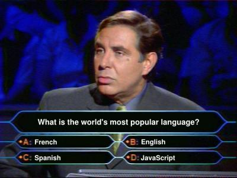

JavaScript е жена. Понякога е отзивчивата, вършеща всичко любима, а понякога е нетърпимата, правеща каквото си поиска, нелогична в действията си красавица, която ви подтиква да се влюбите в нея. Ако любовта към жената минава през стомаха, то любовта към javascript минава през много F*ck this shit. Накрая просто се жените за нея и… свиквате със чудатостите и.
Целта на следващите примери са обобщение на някой известни, и някои не толкова известни поведения на js в някои browser-и, които голяма част от хората свикнали с “цивилизовани езици”, смятат за странни.
Или почти всичко, като изключим примитивите (String, Boolean и т.н.), които обаче пък имат object wrapper-и, от където идва и самото объркване, че всичко в js е object. И тук човек си мисли, да сигурно всичко е object, като изключим да речем и null. Само че дори null е object.